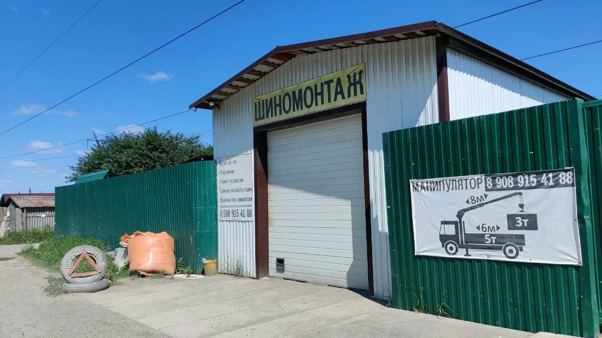
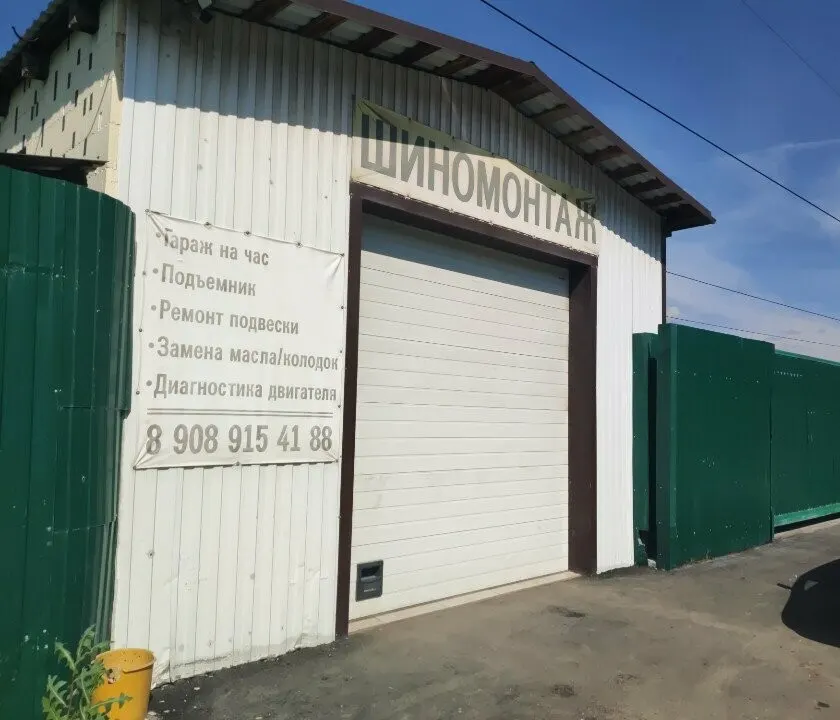
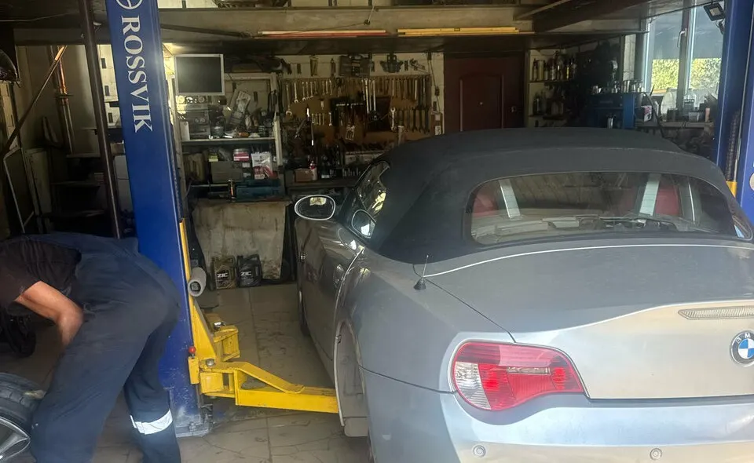
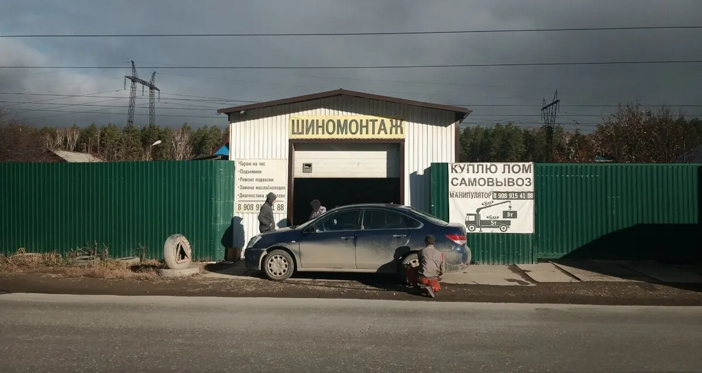

Шиномонтаж · СТ Дружба № 3
Шиномонтаж в Екатеринбурге – позвоните, договоримся о времени
СТ Дружба № 3. Ежедневно 10:00–18:00, перерыв 13:00–14:00. Подъёмник, замена масла и колодок.
- Ежедневно 10:00–18:00, перерыв 13:00–14:00
- Подъёмник в боксе, машину поднимают целиком
- Рейтинг 4,4 на Яндекс Картах, 57 оценок

Цены
Прайса на карточке в Яндекс Картах нет. Цену на вашу работу уточняйте по телефону.
Шиномонтаж
- Переобувка колёсуточнить
- Ремонт проколауточнить
Подъёмник и ремонт (по табличке у ворот)
- Замена маслауточнить
- Замена колодокуточнить
- Ремонт подвескиуточнить
- Диагностика двигателяуточнить
Как приехать
- 01
Позвоните
+7 (908) 915-41-88. Клиенты пишут, что звонили и сразу договаривались.
- 02
Скажите, что нужно
Переобуть колёса, починить прокол, заменить масло или колодки. Время назовут по телефону.
- 03
Приезжайте в СТ Дружба № 3
Ищите белый гараж с жёлтой вывеской «Шиномонтаж» и табличкой с услугами на стене, рядом зелёный забор. Ориентир на Картах – Сад Дружба-3, 19 м.



Что у нас есть
Договориться по телефону
Клиенты пишут: «позвонил, сразу договорились» и «по записи без проблем на зиму две машины переодел».
Подъёмник в боксе
Двухстоечный подъёмник виден на фото. Клиент пишет: «сразу поднимает всю машину».
Масло, колодки, подвеска
Услуги с таблички на воротах. Что делают сегодня и сколько это стоит, уточняйте по телефону.
Прокол за 15 минут, по отзыву
Клиент пишет: «Сделал все за 15 минут». Сроки зависят от загрузки, уточняйте по телефону.
Отзывы с Яндекс.Карт
«Отличный шиномонтаж, есть подъемник, делает еще и подвеску и диски правят. Есть сезонное хранение комплектов.»
Александр Лищенко · 23 сентября 2025
«Проколол колесо, позвонил, сразу договорились, очень отзывчивый человек. Сделал все за 15 минут, большое спасибо!»
Гендальф Серый · 1 мая 2025
«Отличный сервис! Грамотный специалист. Рекомендую. По записи без проблем на зиму две машины переодел.»
Широкий · 16 октября 2025
Отзывы с карточки на Яндекс.Картах, без правок.
Частые вопросы
Как договориться о времени?
Позвоните по телефону +7 (908) 915-41-88. Клиенты пишут, что звонили и приезжали ко времени.
Какой график?
Ежедневно 10:00–18:00, перерыв 13:00–14:00 (по данным карточки на Яндекс Картах). В праздники и выходные дни уточняйте по телефону.
Есть ли подъёмник?
Да, в боксе стоит двухстоечный подъёмник. Он виден на фото, и клиенты пишут о нём в отзывах.
Как найти?
СТ Дружба № 3: белый гараж с жёлтой вывеской «Шиномонтаж», на стене табличка с услугами и телефоном.
Приезжайте в СТ Дружба № 3
- Адрес
- СТ Дружба № 3, Екатеринбург
- Часы
- Ежедневно 10:00–18:00, перерыв 13:00–14:00
- Телефон
- +7 (908) 915-41-88